Overview
Sheets are surfaces containing supplementary content, anchored to the bottom of the screen. They are useful for requesting specific information from people or presenting a scoped task that people can complete before returning to the parent view. Sheets utilize an elevation level of token: 16.
Tablet and desktop will use Modal.
Variants
There are three variants of Sheets: Bottom, Large Bottom and Action.
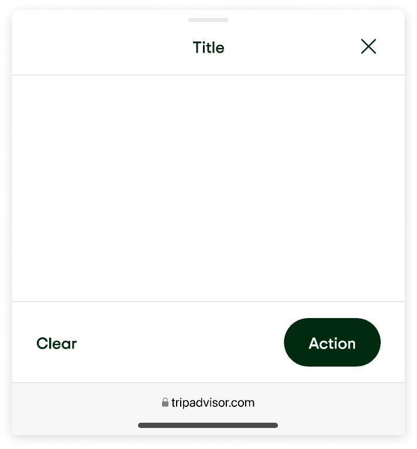
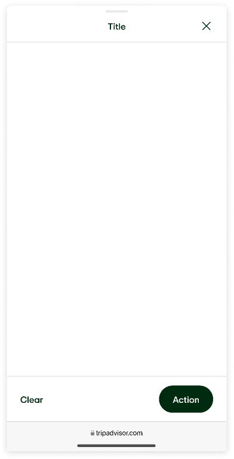
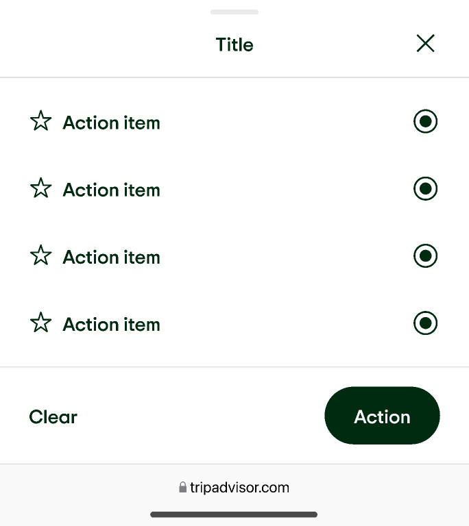
Anatomy & Size
Each sheet component contains top bar, container, and optional bottom bar.
Anatomy - Top Bar Scrolled
The top bar is fixed to the top of the Bottom Sheet, content scrolls below it. The product details extends below top bar, once the user has scrolled past a product name + rating. The top bar consists of a Circular Close Button (optional when there is a CTA on the bottom sheet), Circular Save Button, title (optional), label (optional), product name, ratings, and handle (optional)
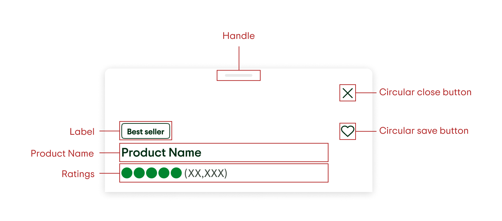
Behavior
Modal and Non-modal
Sheets can be modal or non-modal. A modal sheet blocks people from interacting with the page behind the sheet. Modal sheets are either full screen or have a scrim behind them. A non-modal sheet does not have a scrim and allows people to interact with the content behind the sheet without dismissing the sheet.
Modal Sheets
Use Modal Sheets to help users focus on a scoped task. It essentially puts the main application on pause.
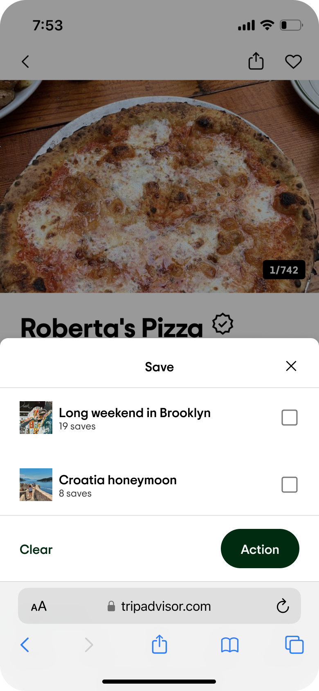
Nonmodal Sheets
Use Nonmodal Sheets when users continue to interact with the parent view while the Nonmodal Sheet is onscreen.
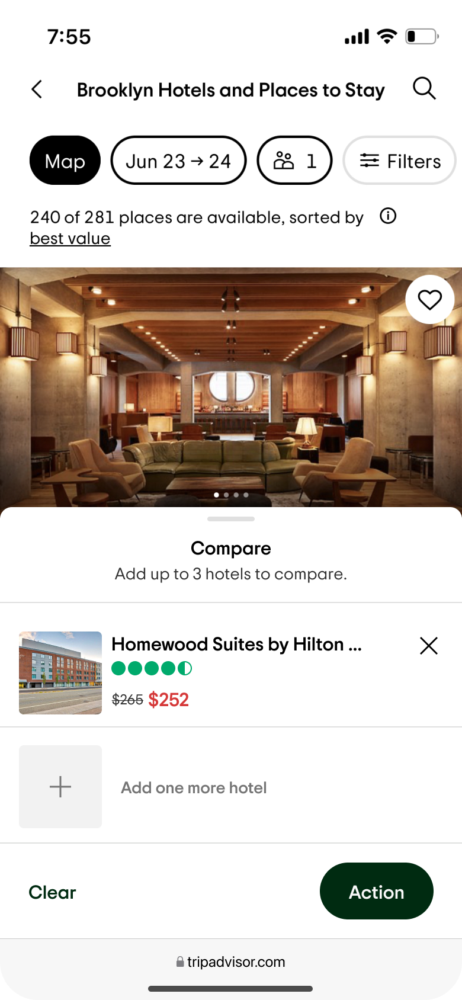
Sheet States
Medium Sheet
The height of the Medium Sheet is variable, it will expand to contain its content. When it is opened, the Medium Sheet has a height of 50% of the screen or less, the overflow content will either scroll or the sheet can be resized to the full height of the screen.
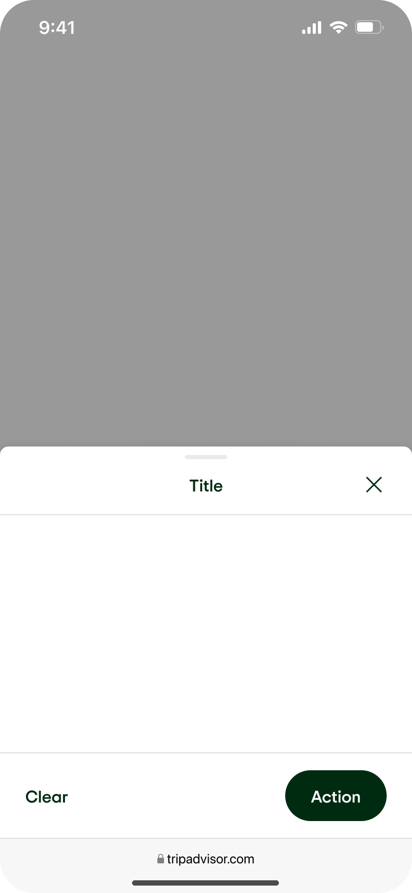
75% screen height sheet, flyout sheets
This instance of the Medium Sheet is to be used solely for the mobile version of Flyouts. When it is opened, this sheet has a height of 75% of the screen. On scroll, the sheet will snap to the Large Bottom Sheet with the option of including a fixed product header and elevation. These sheets are always presented modally.
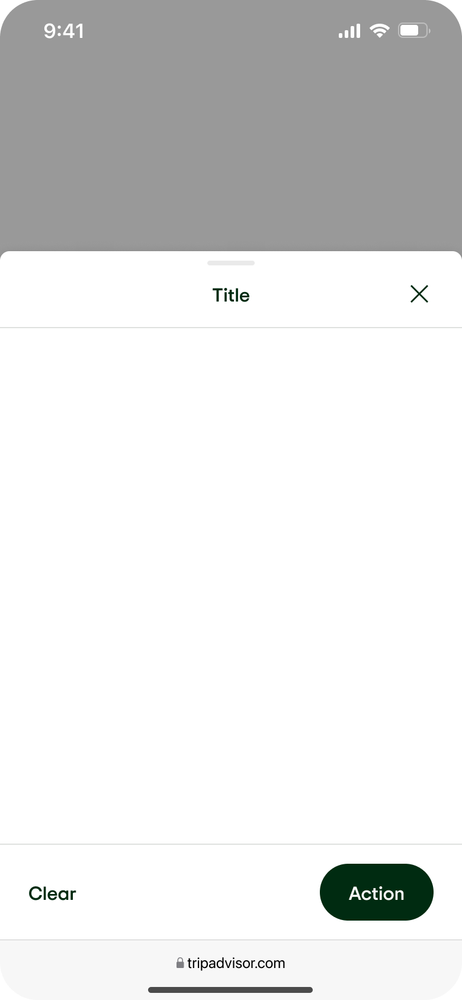
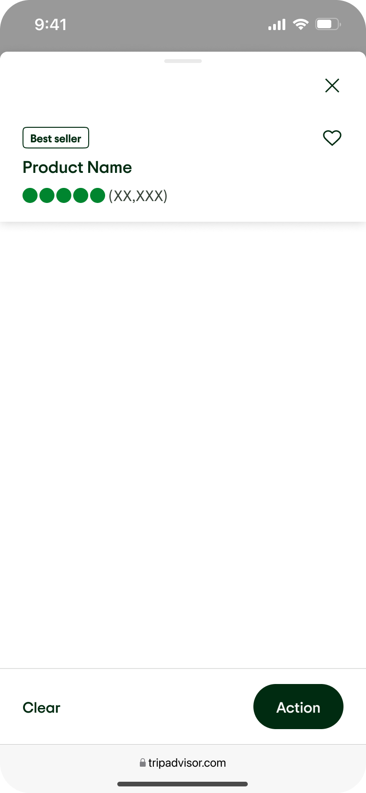
Large sheet
A Large Sheet is the full height of the screen minus 8px below a status bar.
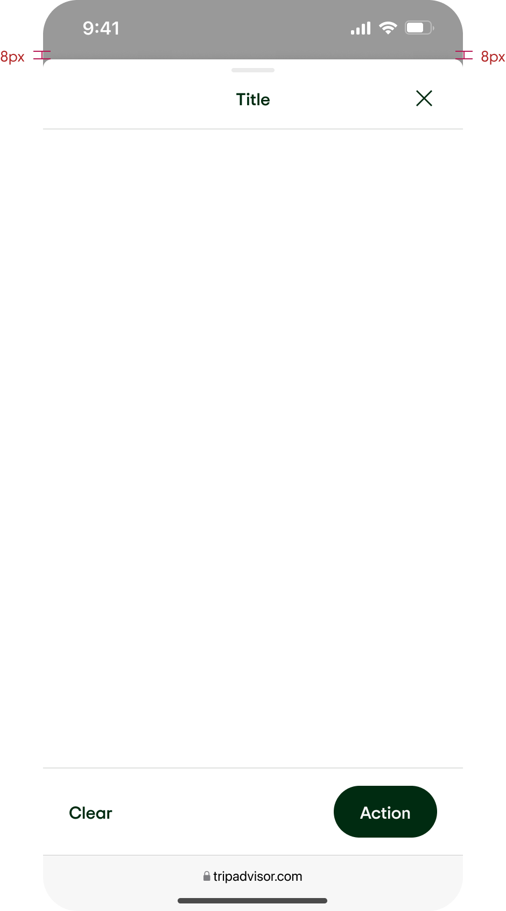
Dismissing the sheet
- Tap a menu item or action within the sheet
- Tap the close button on the top bar (if available)
- Tap the scrim
- Swipe/drag the sheet down
Examples
Action sheet
- An Action Sheet is a type of Medium Sheet with specific content. The Action Sheet presents choices related to an action people initiate. Action sheet guidelines:
- An action item must contain text.
- An action item may contain an optional icon, icons can help a user visually orient themselves with a decision. If one action item includes an icon, we recommend including an item in all action items.
- An action item may contain either a radio button (for a single selection) or a checkbox (for selecting multiple actions).
- Bottom bar is optional
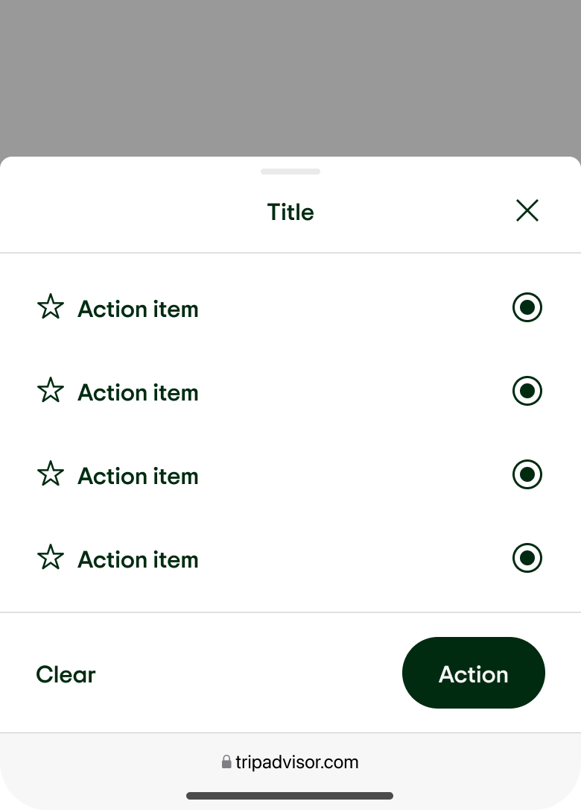
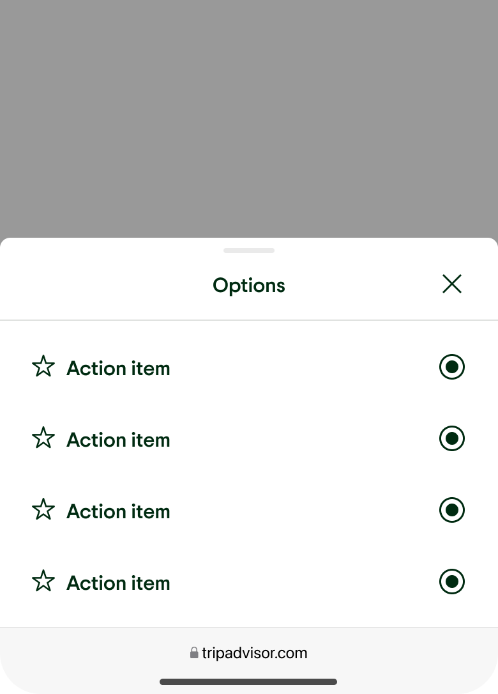
Flyout Sheets, utilizing 75% sheets
On mobile, the default view of a Flyout Bottom Sheet is 75% of the screen height. On scroll, the sheet snaps to full-height, Large Bottom Sheet, and is often paired with a fixed header and elevation.
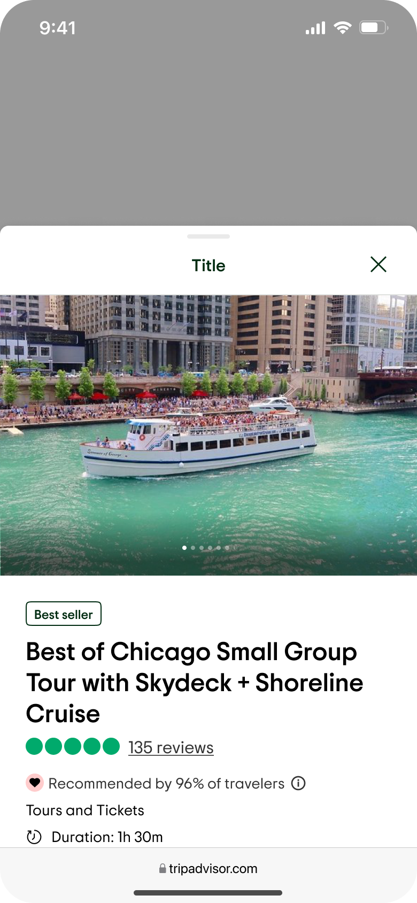
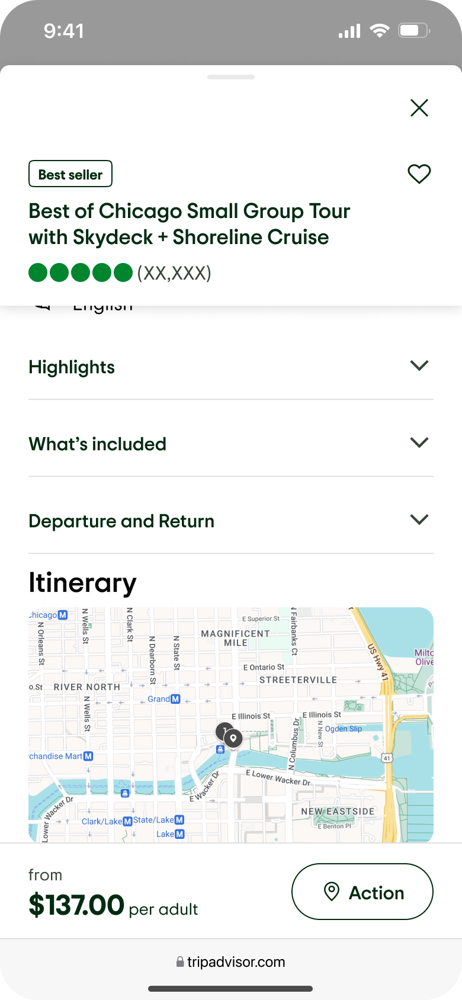
Pickers
For larger picker content, like the calendar, display in a Large Sheet; smaller content like the time picker can be displayed inside of a Medium Sheet.
Single Pickers
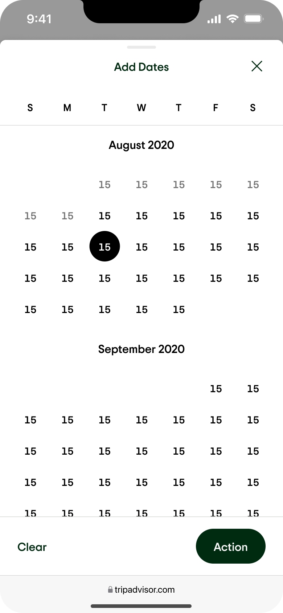
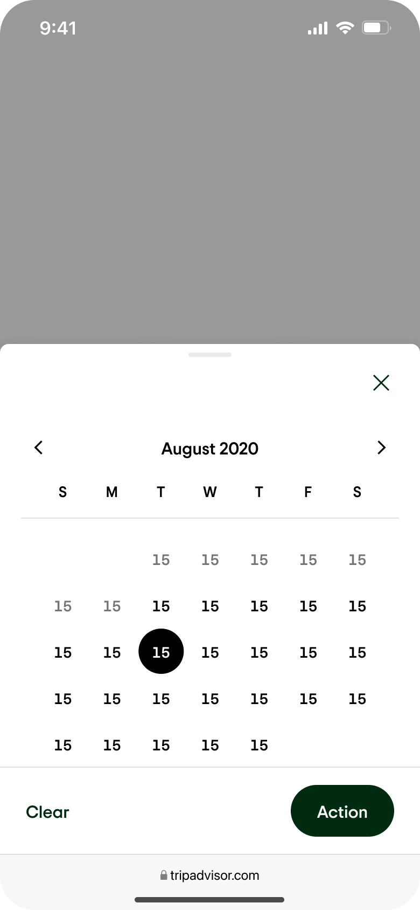
Multiple Field Pickers
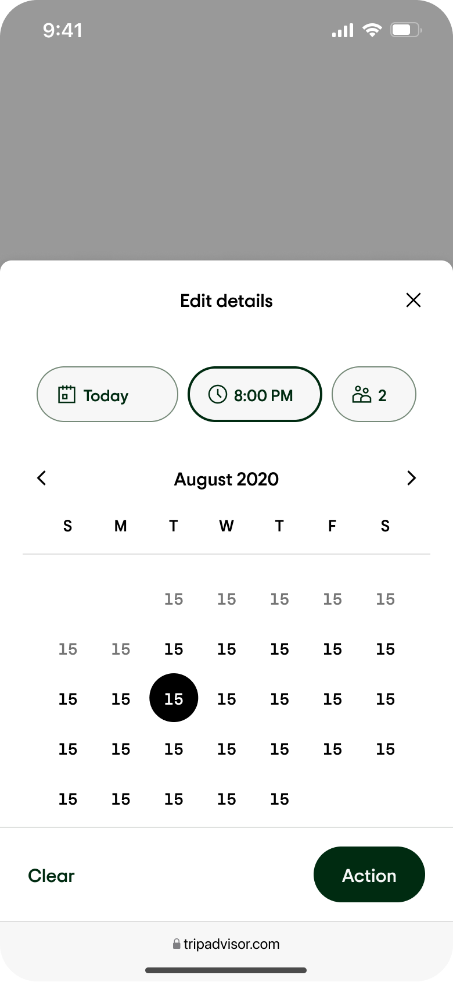
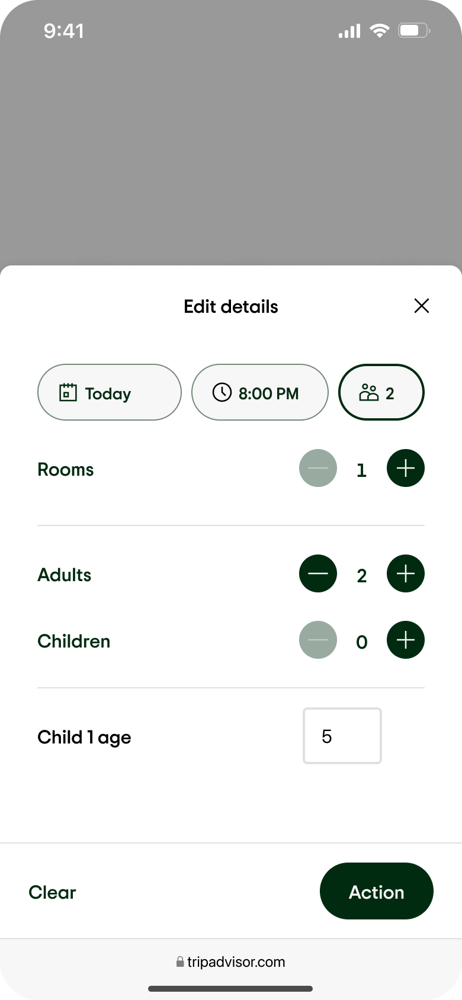
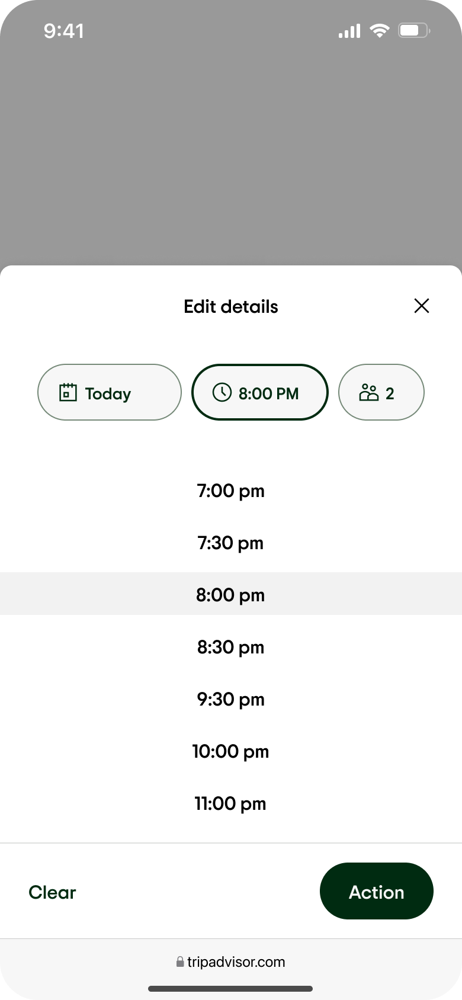
Darkmode
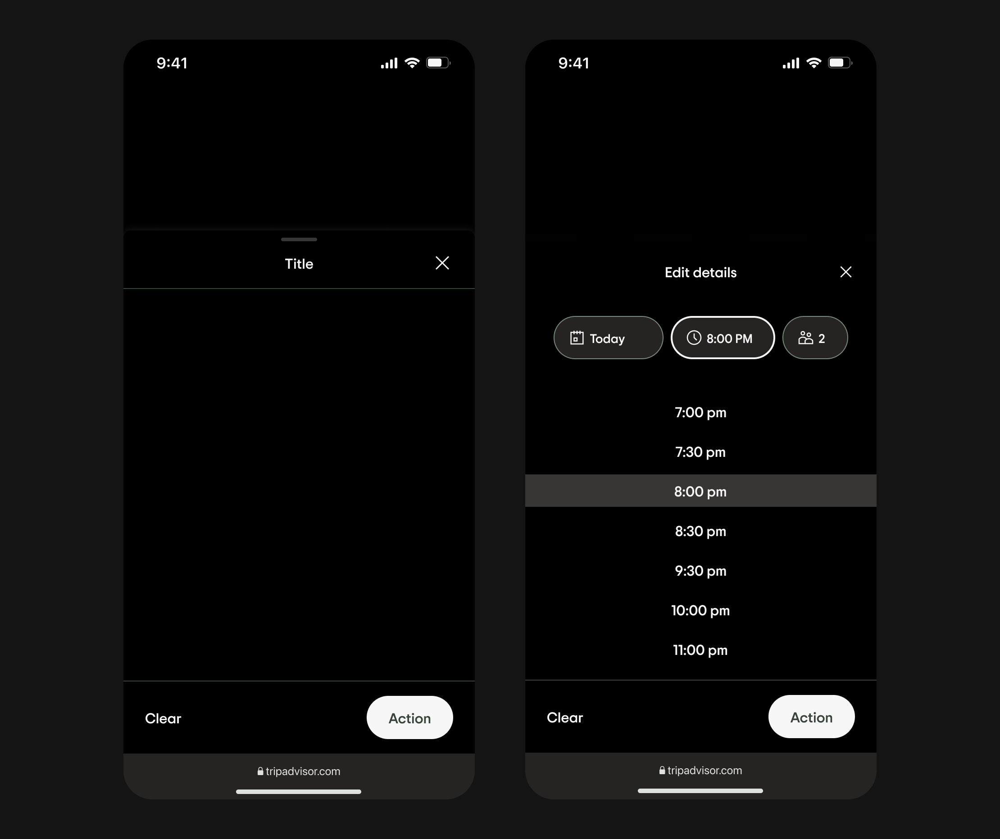
Storybook Demo
In order to properly view this demo, please make sure you’re connected to the Tripadvisor Global Protect VPN.